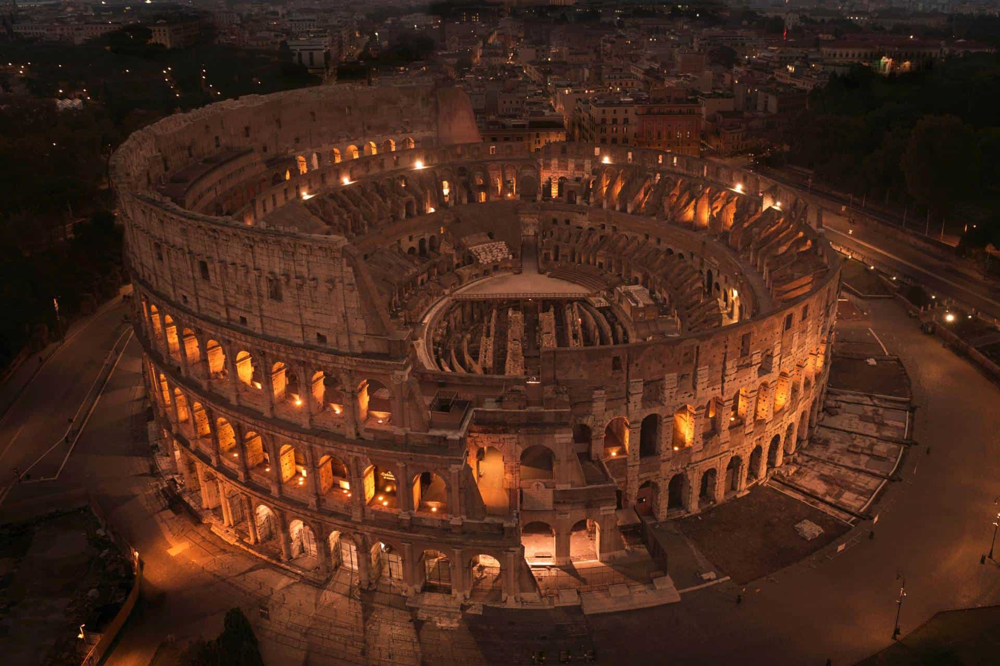
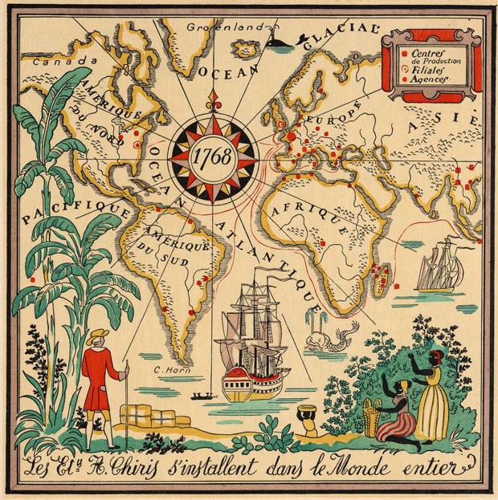
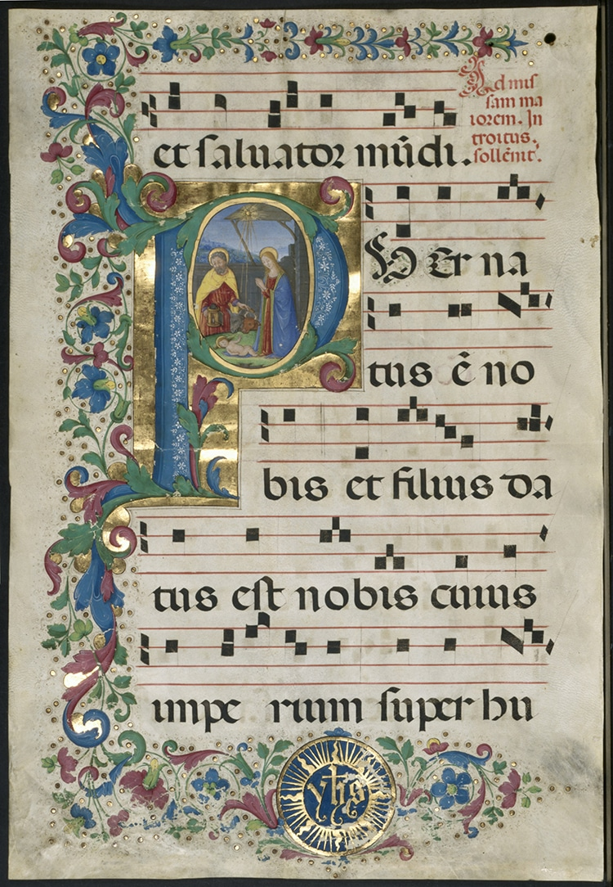
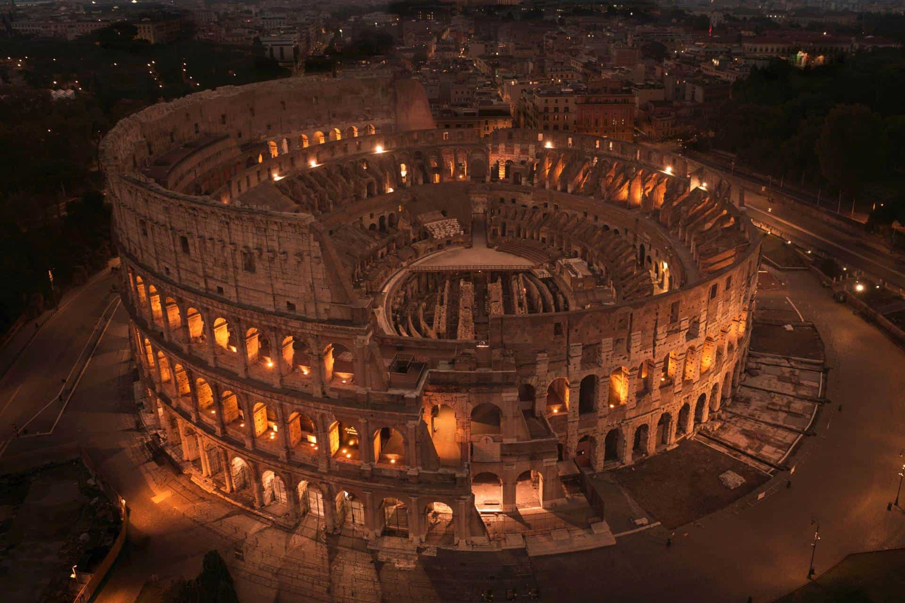
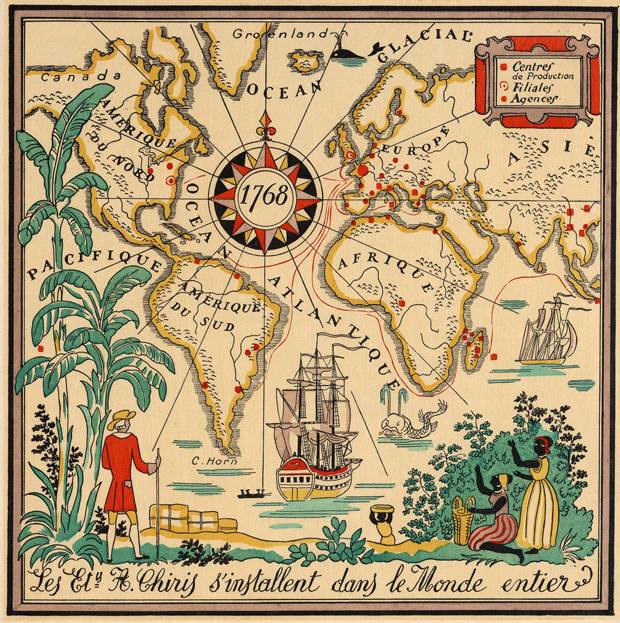
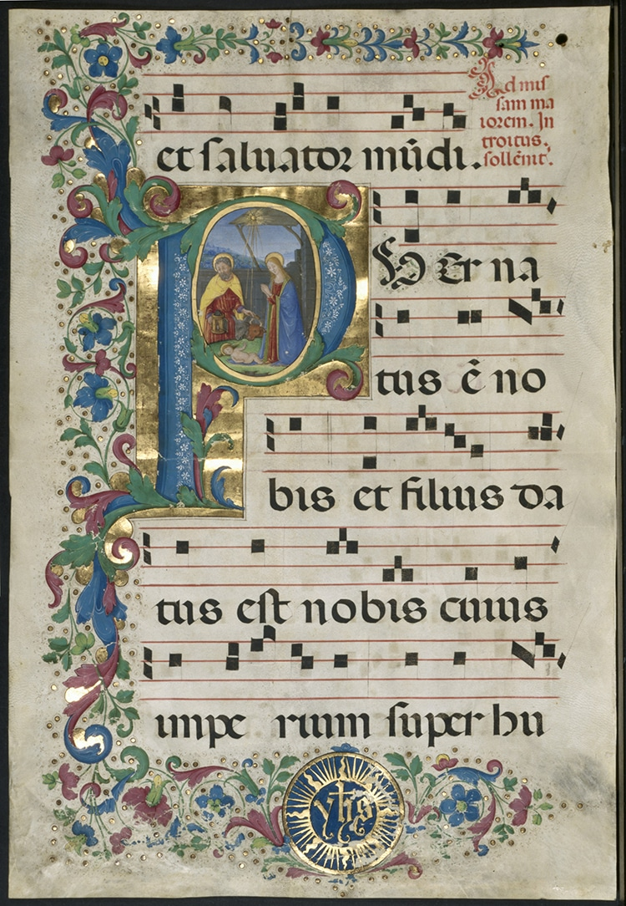

Egipto
Civilización que floreció a lo largo del río Nilo desde alrededor del 3100 a.C. hasta el 332 a.C. Conocida por sus impresionantes pirámides, faraones y avanzado sistema de escritura jeroglífica.
- Período: c. 3100 a.C. - 332 a.C.
- Logros: Pirámides, medicina avanzada, calendario solar
Profundizando en el Antiguo Egipto

El Antiguo Egipto fue una de las civilizaciones más influyentes y duraderas de la historia. Desarrollaron un sistema de escritura complejo (jeroglíficos), una arquitectura monumental como las pirámides y templos, y avances significativos en matemáticas y astronomía. Su religión, centrada en el más allá, dictaba gran parte de su vida y costumbres.
Los faraones eran considerados dioses vivientes y gobernaron con poder absoluto, construyendo un vasto imperio a lo largo del Nilo. Descubre las fascinantes historias de Tutankamón, Ramsés II y la enigmática Cleopatra.
Curiosidades:
- Crearon uno de los primeros calendarios solares de 365 días.
- Fueron pioneros en técnicas médicas y quirúrgicas.
- Creían firmemente en la vida después de la muerte y la momificación.


 




